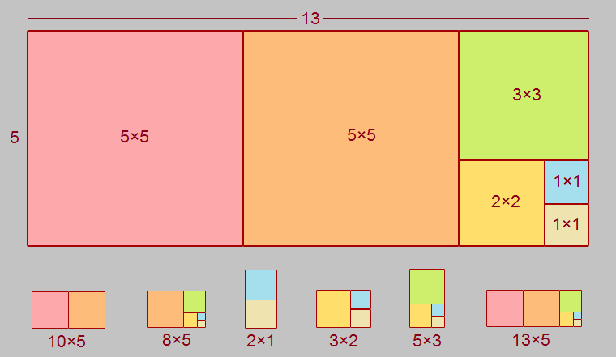
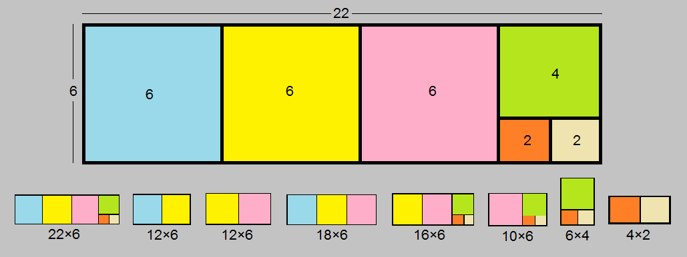

Rectangle into Rectangles
Points: 5 kyu
Kata ID: 58b22dc7a5d5def60300002a
A "True Rectangle" is a rectangle with two different dimensions and four equal angles.
Task:
In this kata, we want to decompose a given true rectangle into the minimum number of squares, Then aggregate these generated squares together to form all the possible true rectangles.
Examples:

As shown in this figure, we want to decompose the
(13*5)true rectangle into the minimum number of squares which are[5, 5, 3, 2, 1, 1]to return all the possible true rectangles from aggregating these squares together :
rectIntoRects(13, 5) should return the ractangles: ["(10*5)", "(8*5)", "(2*1)", "(3*2)", "(5*3)", "(13*5)"] //or any other order
Another example :

Here is the
(22*6)true rectangle, it will be decomposed into the[6, 6, 6, 4, 2, 2]squares. so we should aggregate these squares together to form all the possible true rectangles :
rectIntoRects(22, 6) should return the ractangles: ["(12*6)", "(18*6)", "(22*6)", "(12*6)", "(16*6)", "(10*6)", "(6*4)", "(4*2)"] //or any other order
More Examples :
The (8*5) true rectangle will be decomposed into
[5, 3, 2, 1, 1]squares, so :
rectIntoRects(8, 5) should return: ["(8*5)", "(5*3)", "(3*2)", "(2*1)"] //or any other order
The (20*8) rectangle will be decomposed into
[8, 8, 4, 4]squares, so :
rectIntoRects(20, 8) should return: ["(16*8)", "(20*8)", "(12*8)", "(8*4)"] //or any other order
See the example test cases for more examples.
Notes:
- You should take each square with its all adjacent squares or rectangles to form the resulting true rectangles list.
- Do not take care of the resulting rectangles' orientation. just
"(long_side*short_side)".
Edge cases:
rectIntoRects(17, 5)should equalrectIntoRects(5, 17).
- If
length == widthit should returnnull/None/{}based on your language.
- If
length == 0orwidth == 0it should returnnull/None/{}based on your language.